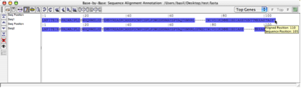
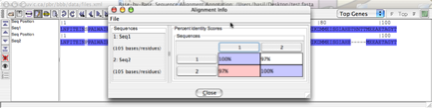

| New Alignment |
Opens a new alignment window with no sequences loaded. From here you can either add sequences to the
alignment from a file or database or load an existing alignment from a file.
|
| Add Sequences to Alignment |
Adds a sequence to the end of the open alignment. Sequence data can come from one of three sources:
- Local File - All of the sequences contained in a file stored on your local computer will be
added to the alignment. The file can be FASTA, ClustalW or BBB formatted. BBB files can contain gene
feature information, which will be added with the sequence if it is present. For more information on
files, see the section on File Types
- VOCs Database - Adds one or more sequences from the currently selected VOCs database. You can
chose the current database from the Tools Menu. If the VOCs database stores
gene feature data for the selected sequences, it will be added.
- Website - We have included a number of premade alignments which can be accessed at the end of
the append sequences menu. These are BBB formatted files which are stored on our server.
Once sequences are appended you can change their ordering using the Sequence
List Toolbar.
|
| Open Alignment |
Opens an existing alignment. If you have anything in the current alignment it will be closed before the new
alignment is opened. Alignment data can come from one of two sources:
- Local File - The file can be FASTA, ClustalW or BBB formatted. BBB files can contain gene
feature information, which will be added with the sequence if it is present. For more information on
files, see the section on File Types
- Website - These are BBB formatted files which are stored on our server.
|
| Remove Sequences |
Removes the sequences that are currently selected from the alignment. You can select sequences by clicking
on the sequence name on the left hand side of the main display.
|
| Save |
Saves the current alignment to a file. If you are saving a new alignment, you will be prompted to enter a
location and filename to store it. For more information on files, see the section on File Types.
|
| Save As... |
Saves the current alignment to a file. You will be prompted to enter a location and filename to store the
alignment.
|
| Export Selection (Selected Sequences) |
Saves the selected portion of the selected sequences to an alignment file. If no sequence data is selected
or no sequences are indicated (selected in the header list), then a warning message will be displayed.
|
| Export Selection (All Sequences) |
Saves the selected portion of all sequences to an alignment file. If no sequence data is selected, an error
message will be displayed
|
| Export Alignment Image... |
Saves a portion of the alignment as an image to be viewed later. The image width, spacing are selected by
the user, and the image can be either PNG or JPG formats.
|
| Delete Gap Columns and Export |
Saves a new alignment file that contains all sequences in the current alignment with columns containing only
gaps deleted. WARNING: This can cause real sequence data to be deleted.
|
| Close Alignment |
Closes the current alignment. If you have not saved the alignment you will be asked if you would like to
before you continue. A blank alignment window will be displayed after the previous alignment has been
closed.
|
| Quit |
Exits Base-By-Base. If you have not saved the current alignment you will be asked if you would like to
before you quit.
|
| Undo |
Undoes the last gap insertion or deletion made when clicking and dragging the mouse while in 'Edit Mode'.
|
| Redo |
Redoes the last undone insert or delete. |
| Mark All Sequences |
Marks all sequences in the alignment. Many functions in base by base can be applied to a subset of the
sequences in the alignment, This is the same as clicking on all names in the header list.
|
| Unmark All Sequences |
Unmarks all sequences in the alignment. |
| Select Whole Sequence |
Selects the entirety of all of the marked sequences. If the sequences are of varying length you will be
asked if you would like to normalize them by padding the end with gaps before continuing.
|
| Select Region |
Selects a subsequence of all marked sequences. The user will be prompted to enter beginning and ending
sequence numbers for the selection select. Useful if you have to select large regions of a sequencesequence.
|
| Insert Gaps |
Inserts gaps into all marked sequences at the currently selected position. |
| Remove Gaps |
Removes gaps from all marked sequences in the current sequence selection. |
| Preferences |
Allows the user to edit his or her user settings for display and warnings. |
| Comparison Method |
Sets how the difference row in the main display is calculated. In "Pairwise Comparison" mode the row shows
the differences between the two adjacent sequences. In the "Against Consensus" mode, the sequences are
compared to the predominant nucleotide or amino acid at that position.
|
| Set Display Area |
Allows the user to limit the area displayed in the main alignment window. This allows you to cut an
arbitrary portion of the left and/or right end of the alignment from the display. The alignment itself
remains unchanged, only the view that the user has on it. For more information see the Display Area and what it means to reports.
|
| Show/Hide Sequences |
Allows the user to set whether each sequence should appear in the display. Unchecked sequences will remain
in the alignment but will not be shown in the display window. You can display the sequences again by by
checking them.
|
| Color Scheme |
Allows the user to select the scheme which will be used to colour sequence data. These include the default
character-identity based scheme where each character is assigned a predefined colour, and a simple percent
identity style which uses shades to indicate the frequency of each nucleotide or amino acid at each position
in the alignment. Protein sequence alignments may also be viewed with similarity-matrix based (BLOSUM62 or
PAM250) shading for which residues "similar" to the most frequently occurring amino acid are also colored. A
hydrophobicity coloring scheme which shades amino acids based on the hydrophobicity score of each residue is
also available .
|
| Consensus |
Displayes a consensus sequence generated from all sequences displayed in the alignment. Currently provides a
display based on percentage identity, however more consensus calculations can be added.
|
| Go To Location |
Prompts the user to select a position, position type and sequence. The type will set whether the location is
in relation to the just the sequence ("Absolute Postion") or to the gapped out alignment ("Gapped
Position"). Base-By-Base will scroll the window to the specified position on the given sequence.
|
| Skip Left/Right 1kb/10kb |
Shifts the display left or right 1,000 or 10,000 base positions in the alignment. |
| Go to Last/Next Comment |
Scrolls the display to the first comment to the left (for "Last") or right (for "Next") of the screen. If
there are no comments, the display will not be moved.
|
| Go to Last/Next Gene |
Scrolls the window to the first gene to the left (for "Last") or right (for "Next") of the screen. If there
are no genes, the display will not be moved.
|
| Go to Last/Next Difference |
Scrolls the window to the first difference to the left (for "Last") or right (for "Next") of the screen. If
there are no differneces, the display will not be moved.
|
| Neighbor Joining Tree |
Uses the PAL library to construct a neighbor joining tree from all sequences in the alignment. |
| Clustering Tree |
Uses the PAL library to construct clustering trees from all sequences in the alignment. The types of
clustering trees available are: Complete Linkage, Single Linkage, UPGMA Tree and WPGMA Tree.
|
| View CDS Statistics |
Displays the CDS Statistics window which provides an analysis of the difference between genes on two
sequences. The differences between the genes of one sequence and the corresponding area on the other
sequence are logged. For more information on the CDS Statistics, see the section on the CDS Statistics Window |
| View Event Breakddown |
Displays a breakdown of events that occur in the CDS Statistics window and events that occur in any user
added comments. For more information, see the Event Breakdown Window
section.
|
| Pairwise Alignment |
Opens a new text window containing a pairwise alignment of all marked sequences in the order they appear in
the alignment.
|
| Consensus Report |
Opens a new window containing the consensus sequence for the alignment. If there is no consensus at a
position an N is inserted in its position. This sequence can be exported to a fasta file.
|
| Visual Summary |
Displays a visual overview of the alignment, with different colouring schemes showing the relation of the
sequences to the consensus of the alignment. For more information, see the Visual
Summary Window section.
|
| Alignment Info |
The percent identity is calculated using the following formula:
ID% = 100-[(M*100)/(AL-TG)], where
M - total number of mismatches
AL - the length of the alignment, or position of the last aligned residue
TG - total number of gaps in the alignment
So we are calculating the percent of the mismatched residues of the total
number of aligned residues. Subtracting the result from a hundred will give
us percent identity. This is the same as calculating the %identity over
only positions where there are aa in each sequence.
For example: Below are two aligned sequences of 105 amino acids each. There
are three mismatched residues and two gaps (5 bases each, or 10 total). The
total length of the alignment is 110.

Plugging all the numbers in to the equation above: ID%=100-[(3*100)/(110-10) = 97%

If you have a long alignment and you need to calculate the total number of
gaps, you'll first need to figure out how many gaps are there in every
sequence and sum them up. You can do that by simply subtracting the last
aligned position from the last sequence position. In the example above the
last aligned position is 110 and the sequence position for the first and
second protein is 105. So the gap size in first the sequence (110-105) is 5
and the gap size in the second sequence is also 5 or 10 total paged positions
in the alignment.
|
| Fuzzy Motif Search |
Opens the Fuzzy Motif Search window, which allows you to do fuzzy searching by specifying a sequence to
search for, and a number of allowed mismatches. For more information on the Fuzzy Motif Searching available
from Base-by-Base, see the Fuzzy Nucleotide Motif Searching section
of the manual.
|
| Reg. Expression Search |
Opens the Regular Expression search window, which allows you to search all sequences in the alignment for a
match using the powerful Regular Expression grammar. For more information on Regular Expressions see the regular expression tutorial. Note that
Base-By-Base uses Perl 5 regular expressions, with case insensitive searching. |
| Export Differences to VGO |
Exports the pairwise differences between two sequences of the alignment to a file that can be imported as an
analysis into the Viral Genome Organizer. The file contains
the locations of differences in one genome with respect to those in another, and stores them in relation to
the sequence positions, not the alignment. This allows VGO to import the sequence positions irrespective of
the alignment.
|
| Add Comment |
Add a comment to the currently selected region of the first marked sequence. A window will be opened
promptimg the user to enter a comment and select foreground and background colours. Comments are associated
with the strand they were added to.
|
| Remove Comment |
Removes the comment currently selected by the user. If there is no comment currently selected, a message
will show to prompt the user to select one.
|
| Align Selection |
Takes the selected region of all marked sequences and brings up an alignment window. If the user chooses to
use an external alignment program, the sequence will be sent to that program before the alignment window is
brought up. The user can then change the alignment manually, and reinsert it back into the main alignment.
Note: If an alignment is done that does not include all seuqences in the alignment and the sequences
are returned at different lengths, this could cause problems with how the newly aligned sequences are
reintegrated into the main alignment.
Below are methods available to use to align sequence regions in Base by Base.
- Manually - Sends the selected region of sequence data into the alignment window unchanged.
The user can then align it by hand outside of the context of the main alignment.
- ClustalW - Sends the selected region of sequence data to ClustalW for alignment, using no
command line options. Note: This currently requires access to a VOCs database.
- t_coffee - Sends the selected region of sequence data to t_coffee for alignment. Note:
This currently requires access to a VOCs database.
|
| Import Genes |
Allows the user to add gene feature data from a datasource to sequences currently in the alignment. This
data is required for items such as the CDS Report.
Base-By-Base currently imports gene feature data from two sources:
- From VOCs Database - Base-By-Base will attempt to match each sequence in the alignment with a
sequence in the VOCs database currently being accessed (check the VOCs Db Connection item in the
Tools menu). You will then be given the option to select corresponding sequences for each sequence
in the alignment, before gene data is downloaded and added to the alignment. Note: In order for
the gene data to make any sense, the sequences must be aligned from position 1, and contain all
sequence data for the entire genome.
- From Feature File - Currently Base-By-Base only imports gene feature data from GenBank files.
Base-By-Base will prompt you to chose a file, and enter a gene prefix, which will be added to each
gene name before the data is added to the alignment. Genes imported in this manner will be attached
to the first marked sequence.
|
| VOCs Db Connection |
Allows the user to choose a VOCs database to connect to. For more information on VOCs database connections
please read the Customization Section. This item also lets you
view database information for available VOCs databases.
|